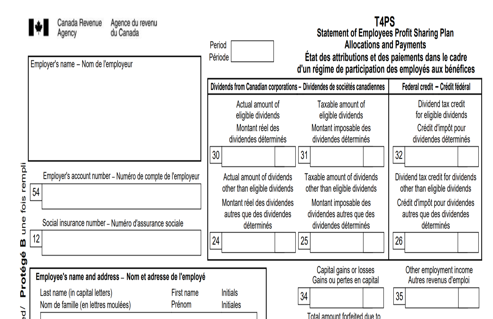

T4PS slip - Statement of Employees Profit Sharing Plan Allocations and Payments
On this page
What is a T4PS slip
A T4PS slip identifies the amounts allocated, whether contingently or absolutely, to an employee who is a beneficiary of an employees profit sharing plan (EPSP) . The amounts are allocated by the trustees of the EPSP and are taxable to the beneficiaries during the calendar year.
You can get a Form T4PS in a PDF or PDF "fillable/saveable format to file on paper.
Sample
{kind=link}
When to issue
If you are an employer or the trustee of a trust governed by an EPSP, you must issue a T4PS slip for any of the following:
- Amounts you allocate, either contingently or absolutely, in the calendar year to your employees who are beneficiaries under the plan
- Amounts you paid in the year to your employees, all or part of which must be included in the income of your employees under subsection 144(7) of the Income Tax Act (ITA)
- Amounts you contingently allocated in the year or previous years to persons as defined in subsection 248(1) of the ITA, who have not received such amounts and have forfeited their right to receive the amounts on ceasing to be beneficiaries under the plan
What is an EPSP and how to make an election to have the arrangement qualify as an EPSP
An EPSP is an arrangement that allows an employer to share profits with all or a designated group of employees. Under an EPSP, amounts are paid to a trustee to be held and invested for the benefit of the employees who are beneficiaries of the plan.
Each year, the following amounts must be allocated either contingently or absolutely among the beneficiaries:
- The contributions received by the trust from the employer or a corporation with whom the employer does not deal at arm's length
- The profits from the property of the trust (computed without reference to capital gains or capital losses)
- All capital gains and losses of the trust
- The amount forfeited by the member of the EPSP who ceased to be a beneficiary under the plan for the year.
There are no CPP contributions, EI premiums or income tax deductions withheld from amounts allocated or paid to the beneficiaries.
How the employer can apply to have the arrangement qualify as an EPSP
The employer must make an election with the CRA to have an arrangement under which payments are stipulated to be made “out of profits” to qualify as an EPSP by sending all of the following information:
- A letter from the employer stating that the employer elects to have the arrangement qualify as an EPSP
- If the employer is a corporation, and the directors are:
- Legally entitled to administer the corporation's affairs, a certified copy of the resolution of the directors authorizing the election to be made
- Not legally entitled to administer the corporation's affairs, a certified copy of the authorization to have the election made by the persons legally entitled to administer the corporation's affairs
- A copy of the agreement and any supplementary agreement setting out the plan.
Where to send the election
Send the election by registered mail to the Employer Programs Operations Section of your tax centre.
What are the guidelines for filling out slips
What are the guidelines for filling out slips
Do
- If you have multiple payroll accounts, file a T4PS return for each payroll account
- Amounts are reported on a T4PS slip for the year in which they are allocated or paid
- Report, in dollars and cents, all amounts you paid during the year
- Report all amounts in Canadian dollars, even if they were paid in another currency. Learn more about the average exchange rates: Exchange rates
Do not
- If a box does not have a value, do not enter "nil" or "N/A", leave the box blank
- Do not change the headings of any of the boxes
- Do not enter hyphens or dashes between numbers
- Do not enter the dollar sign ($)
How to fill out
Identification
Period Slips filed for calendar year 2024 only
For T4PS slips filed for 2024, enter the end date of the period of the calendar year in which you allocated or paid the amount to the employee, either:
For January 1, 2024 to June 24, 2024, enter 20240624.
For June 25, 2024 to December 31, 2024, enter 20241231.
If you are reporting amounts for both periods, complete a separate T4PS for each period.
Year Slips filed for before and after calendar year 2024
For T4PS slips filed before and after 2024, enter the 4 digits of the calendar year in which you allocated or paid the amount to the employee.
Employer's name
Enter your legal name, your operating or trading name (if it differs from your legal name) and address. This should be the same information that appears at the top of your PD7A statement of account.
Employee's name and address
Enter all in capital letters the employee's last name followed by the employee's first name and initials.
If the employee has more than one initial, enter the employee’s first name followed by the initials in the ‘First name’ space.
Do not enter titles, such as Director, Mr., or Mrs.
Enter the employee's home address, including the province or territory, the postal code and the country.
Name of EPSP
Enter the name of the plan.
Box 12 – Social insurance number (SIN)
Enter the SIN provided by the employee.
Specific situations
- No SIN
- Enter 9 zeros if you do not have the employee's SIN. You still have to file their T4 slip before the due date even if you cannot get a SIN from your employee.
- SIN beginning with a 9 and received a permanent SIN
Enter the permanent SIN if the employee had a SIN beginning with a 9 and later in the year received a permanent SIN.
Do not prepare 2 T4 slips.
Learn more: Get the social insurance number (SIN)
Box 54 – Employer's account number
Enter your 15-character payroll account number (for example, 123456789RP0001) on your copy and the copy you send to the CRA only.
Do not enter your account number on the copies you give to the employees.
Dividends from taxable Canadian corporations other than eligible dividends
Box 24 – Actual amount of dividends other than eligible dividends
Report the actual amount of dividends other than eligible dividends, or the amount we deem to be dividends other than eligible dividends, paid by a taxable Canadian corporation using box 24.
If you report an amount in box 24, you also have to report amounts using box 25 and box 26.
Box 25 – Taxable amount of dividends other than eligible dividends
Enter 15% more than the amount you reported using box 24.
Box 26 – Dividend tax credit for dividends other than eligible dividends
Enter 9.0301% of the taxable amount you reported using box 25.
Eligible dividends from taxable Canadian corporations
Box 30 – Actual amount of eligible dividends
Report the actual amount of eligible dividends that are paid by taxable Canadian corporations using box 30.
If you report an amount in box 30, you also have to report amounts using box 31 and box 32.
Box 31 – Taxable amount of eligible dividends
Enter 38% more than the amount you reported using box 30.
Box 32 – Dividend tax credit for eligible dividends
Enter 15.0198% of the taxable amount you reported using box 31.
Other information
Box 34 – Capital gains or losses
Report the capital gains or losses of the employee using box 34. If the net amount represents a capital loss, put it in brackets.
If you report an amount in box 34 and it is related to foreign capital gains or losses, you also have to report using box 38.
Your employee will report this amount on line 17399 for period 1 or 17400 for period 2 of their Schedule 3.
Box 35 – Other employment income
Report all other amounts the trust received and allocated to the employee during the year that you did not report in any other box using box 35.
These amounts include:
- Amounts received from the employer
- Amounts reallocated from other employees
- Foreign dividends
- Other foreign non-business income also reported using box 37
- Employee profit sharing plan payments that must be included in income according to 144(7) of the ITA
- Any taxable amount the trust paid during the year to the employee but you have not already reported
Your employee will report this amount on line 10400 of their income tax and benefit return.
Box 36 – Total amount forfeited due to a withdrawal from plan
Report the total of the amounts previously allocated that the person is no longer entitled to receive using box 36.
The person will report this amount on line 22900 of their income tax and benefit return.
Box 37 – Foreign non-business income
Report the gross amount, before you deduct income tax, of foreign non-business income using box 37.
If you report an amount in box 37, you also have to report other employment income using box 35 and foreign non-business income tax using box 39.
Your employee will use this amount to calculate their foreign tax credit on their Form T2209.
Box 38 – Foreign capital gains or losses
Report the gross amount, before you deduct income tax, of the trust’s foreign capital gains or losses allocated to the employee using box 38 and box 34. If the net amount represents a capital loss, put it in brackets.
If you report an amount in box 38, you also have to report foreign non-business income tax using box 39.
Your employee will use this amount to calculate their foreign tax credit on their Form T2209.
Box 39 – Foreign non-business income tax
Report the portion of the income tax the trust paid using box 39 that you can attribute to the amount you reported in box 37 for foreign non-business income and in box 38 for foreign capital gains or losses allocated to the employee.
Your employee will use this amount to calculate their foreign tax credit on their Form T2209.
Box 40 – Specified employee
Tick the box “Yes” if the employee is a specified employee. Otherwise, tick the box “No”.
Do not tick either of the options if you are not sure if the employee is a specified employee.
Specified employees are employees dealing with their employer in a non-arm's length relationship, or who have a significant equity interest (10% or more of any class of shares) in their employer.
If you tick “Yes” or you are not sure if the employee is a specified employee, you also have to report an amount using box 41.
If an excess amount has been contributed to a specified employee’s EPSP, the excess EPSP amount is subject to a special tax on their personal income tax return.
Learn more: Get ready to make deductions and Excess employees profit-sharing plan (EPSP) amounts – Salaried employee expenses
Box 41 – Employees profit sharing plan contributions
Report the total amount of employer contributions made to the employees profit sharing plan and allocated to the specified employee using box 41.
If you are not sure if the employee is a specified employee, you also have to report using box 41.
Your employee will use this amount to determine if they have an excess employee profit sharing plan amount and to calculate the corresponding taxes on Form RC359.